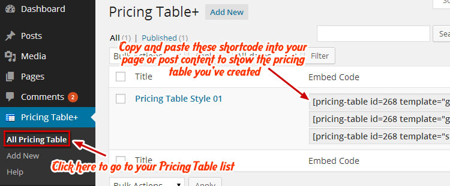

SquareRoot
One Page Multipurpose Wordpress Theme
- Created: 30/04/2014
- Latest Update: 15/08/2014
- By: obTheme
- themeforest.net/user/obTheme
- Email: contact@obtheme.com
Thank you for purchasing my theme. If you have any questions that are beyond the scope of this documentation, please feel free to email via my user page contact form here. Thanks so much!
Files included in the download package
- The theme zip file
squareroot.zip - The demo content file
demo-content.xml
Installing the SquareRoot theme
FIRST, SquareRoot is a Wordpress theme and it needs to be installed into a Wordpress framework, so make sure you have already installed Wordpress 3.5 or higher. If you haven’t already done this, go to Wordpress.org for a free download and follow their installation instructions.
Download SquareRoot Theme
Get the SquareRoot theme installation package from your account downloads page and save it to your desktop.
Upload SquareRoot Theme
You can upload the SquareRoot file in three ways:
a. Via Wordpress – Log into your Wordpress site.
When you get to your Dashboard, scroll down the left sidebar to the “Appearance PanelInstall Required Plugi and hover or click on “Appearance”. You will be able to see the sub-menu in the picture below:
Choose “Themes” and you will see an “Add New” button.

Click on it and choose “Upload Theme” after it navigates you to the “Add Themes” page. Click “Browse” and find the SquareRoot zip file location on your desktop.
Now you just have to click Install Now and wait for your theme folder to be uploaded and unzipped. The process might take some time so please be patient.
b. Uploading Via Filezilla
(SKIP THIS STEP if you have already successfully uploaded SquareRoot theme via Wordpress) - Now you will learn how to upload your files using the Filezilla client.
First, BACKUP YOUR FILES! This is always the safest thing to do.
Next, download and install the Filezilla Client - http://filezilla-project.org/
Now OPEN FILEZILLA to see this window:
Fill in your FTP information, like in the picture below:
Click “QUICK CONNECT” and Filezilla will load your website. Here is how it should look like:
Use the right side panel to navigate to the Worpdress theme folder on your server. In the example above, the Worpdress theme folder is public_html/wp-content/themes/. However, not all web hosting have public_html, it may have a different name in your server.
After you get to the Wordpress theme folder, use the left side panel to locate where you extracted the theme folder from the downloaded zip file into. In this example, the theme folder is on the desktop.
Drag it into your web hosting:
Note – you may be asked if you want to overwrite files and/or folder.
Tick the option to "Always use this action" and click on "Ok.”, then wait until all files have been uploaded.
That's all there is to it!
c. Via IE (Internet Explorer) FTP:
(SKIP THIS STEP if you have already successfully uploaded your SquareRoot theme via Wordpress)
If you prefer uploading your SquareRoot files via Internet Explorer “ftp”, please follow the instruction below.
First, open a browser and type your ftp address into the address bar, like this:
You will see a pop-up window, asking you to insert your user name and password to open your ftp files.
Insert the correct username and password and your browser window will open to the ftp root folder. Find the “Page” button at the top right of your screen, click on it and the drop-down box below will open. Click “Open FTP Site” at the bottom of the drop-down.
ALMOST DONE! After you click “Open FTP Site,” you’ll see this pop-up window will open again.
Insert your user name and password one more time and you will get this screen:
Scroll to the folder that you use for your SquareRoot site. For example, if your site is called “My Resume”, then open that folder. Inside, you will find three folders: WP-Admin, WP-Content, and WP-Includes. Open the folder WP-Content and find “Themes”. This is where Wordpress place place the themes that are available for your website to use.
Now open another explorer window to navigate to where the SquareRoot download package is placed on your PC, which in this case, is the desktop.
BUT WAIT! Since you’re uploading via FTP, you cannot insert the entire SquareRoot folder into the root files. You must UNZIP IT first and pick up only the SquareRoot folder
Drag it into the MyResume » WP-Content » Themes » folder~ in the FTP files.
Once the files you've dragged have finished copying, CLOSE THE FTP WINDOW AND THE THEME FOLDER WINDOW, then go to your Wordpress dashboard and navigate to Appearance » Themes. You will see that SquareRoot is already in your theme choices.
Tips
I recommend using Firebug Addon from Mozilla. This way you will find exact styles applied for each tag and trust me, it will make your life easier. It also has a console to track JS errors.
Here you can see a demos using Firebug http://www.youtube.com/results?search_query=firebug .
Just download it and test it, you won't regret it, I promise you!
Install SquareRoot Theme
If you chose to upload SquareRoot with Wordpress uploader, then wait for the notice below to appear and then click the link “Activate”.
In cases where you uploaded the files with other FTP tools, open the Wordpress dashboard and navigate to Appearance » Themes. You can Activate SquareRoot from the theme choices there.
Click on the SquareRoot icon and then “Save and Activate”. A notice will appear asking you to install some required plugins.
Install SquareRoot Plugins
All plugins required have been zipped into your download package, so all you need to do is click on the “Begin installing plugins” link.
You should be navigated to the Install Required Plugins page. With SquareRoot you will need to install 3 plugins: Contact Form 7, Meta Box, and Pricing Table Plus.
Click on the box beside “Plugin” label to select all plugins in the list, then choose “Install” from the drop-down list at the top and then click “Apply”.
The installing process status will be shown in your browser. It may takes a few minutes, so please be patient.
When the notice “All installations have been completed” appears, click on the Return to Required Plugins Installer link under it to turn back to the plugin list. Click on the box beside the Plugin label again to select all plugins and choose “Activate” this time.
Import Demo Content
If you are new to WordPress and have problems with setting up the theme you might want to import the demo content file that comes with the theme.
But if you decide to build your website from scratch without our demo content, you can skip it an move to the next part: Setup Front page.
- Go to
Tools » Import - Select “WordPress” from the list
- If you haven't installed the WordPress import plugin, a popup window will appears and ask you to install it. Just click Install Now. When the installation progress is completed, click “Activate Plugin & Run Importer”. If you have installed this plugin, skip to next step.
- Click Browse and select
demo-content.xmlfile from the download package - Click “Upload” file and import
- When you are asked to import author, you can create new author or import to existing author. You also should check the “Download” checkbox and import file attachments.
After these steps, access “Page Menu” through “Dashboard” and you will see a list of pages imported into your website.
Setup Front page
To build a Onepage Wordpress Site with SquareRoot, you will need to setup a Front page and set it as your Wordpress Homepage.
As the name indicates, the Front page is actually your Wordpress Homepage, a placeholder needed to turn your normal Wordpress installation into a One Page site.
If you have installed our demo content, you can skip creating the Front page and follow the steps below to Setup your Front page.
But if you did not, you will need to create page to use it your Front page.
- Go to
Pages » Add Newto create a page and name it Front page - Find “Page Attributes” box on your right hand and and assign the Frontpage Template to it
- Click “Publish”
Now you have your SquareRoot Front page ready to be used.
Content from this page won't show on the front page, so you don't have to worry about it.
To set this page as your Wordpress Home, you will need to follow these steps:
- Go to
Settings » Reading - For Front page displays, select A static page (select below)
- Choose Front page to be your Home

- Click Save Changes
Setup Contact Page
If you did not import our demo content, you will need to go to Pages » Add Page and create a Contact Page.
SquareRoot uses Contact Form 7 to generate its contact form for it. You can go to their Documentation page to read more about it.
Your Contact Page will be created simply by adding the shortcode that Contact Form 7 generated to your page content.Below is the shortcode we use for our demo:
Setup Menu
In SquareRoot the Main Menu is very important since it would be used to assign content to your Front page. You would need to follow these steps to assign one to the Main Menu of your website.
- Go to
Appearance » Menus - Select an existing menu to edit, or click create a new menu.
Note: when you import our demo content, WordPress automatically create a menu Main for you,so select it if you want
to have same menu as in live preview. - Select pages from the left meta box and click Add to Menu
- On the right, feel free to drag and drop menu items to organize them
- When you'e done moving your item, check Primary Menu for theme locations at the bottom of the page
- Click Save Menu
Social Widget
SquareRoot comes with one widget area in its footer. We also provide a special widget named Social Links to display your social network URLs with corresponding lovely icons.
Just go to Appearance » Widgets to drag SquareRoot: Social Links to Footer Widget Area, and add the corresponding Social URLs to show them on your footer.
Theme Options
Squareroot advanced Theme Options board is located in Appearance Menu and everything you need to customize the theme layout is here.
Home Settings
First, let's check out the “Home Setting” section, which provides several options for configuring the general layout of your site.
You will be able to work with:
Header Logo
This option is for you to customize your “Header Logo”, which would be displayed on your Sticky Menu as your website identifier.
You can upload a new image or use one that already exists in “Media Library”.
You can also paste an image URL from external source here to use as your “Logo”.
Favicon
The favicon, also known as shortcut icon, Web site icon, tab icon or bookmark icon, is a file containing one or more small icons, most commonly 16×16 pixels, associated with a particular Web site or Web page. Browsers that provide favicon support typically display a page's favicon in the browser's address bar, sometimes in the history as well, and next to the page's name in a list of bookmarks.
Similar to the Header Logo, you can upload a new image or use one that already exists in “Media Library”.
You can also paste an image URL from external source here to use as your “Logo”.
Excerpt Length
Even though Squareroot is a One Page Wordpress theme, we still provide a section for blogging, and you can define the number of words in your excerpts with the “Excerpt Length” options.
Custom Heading Background
In case you decide to use separated pages in SquareRoot, you can also set an image as header for them. The Custom Heading Background option would allow you to upload an image as header for those pages.
Archive Meta Information
Similarly, if you decide to build special section for “Post Archive”, you can use the options below to decide what meta information of your post will be visible.
Header Options
There are also options to choose between a Vertical and 2 types of Horizontal Layout for your Menu, on positioned beneath the “Home” section, and the other is placed on it as an overlay layer with transparent background.
Archive Layout Options
This is the place for you to Select an alignment for your archiver pages, which are pages that list all your posts, in case you decide to use them in SquareRoot. You can choose whether or not to use the sidebar, as well as positioning it in a layout with 1, 2, or 3 columns.
The width of your 2 sidebars can also be adjusted with 2 slider bars.
Footer Options
The Footer options allow you to change the color scheme of your Footer with Text color and Background color options.
You can also add custom Copyright Text to your Footer in this menu.
Typography Options
The Typography section gives you the control to style general text in your website. You will find every option needed to control every thing about typography of the Squareroot theme. You can style the common text in your posts and pages with Body Options, and Headings Options will help you style the headings in your posts.
Custom Css
In case you want to add new CSS classes to style your shop more easily, add it in this text box.
This will overwrite the theme CSS, so please be careful!
Backup & Restore
You can back up the options you chose here and restore them later, in case you want to fiddle with it.
You can even swap data between different installations by pasting the text in the box under Transfer Theme Options Data and click Import Options button.
Google Map Settings
This is where you insert details needed to build a Google Map that will display in a Contact Section.
First you will need to find “Enable Google Maps” option and check it to show a Google Map in a layer under your Contact Information.
You will need to set a Latitude Position and a Longitude Position so Google can generate your map.
These values can be found through an address with this online tool http://itouchmap.com/latlong.html.
The three options Address, Email, and Phone are text boxes for you to enter your Contact Information.
You can also change the background color of the Map button with Button color and Button hover color.
The Background color will allow you to set color scheme for the layer between your Contact Information and your Google Map.
Setup the Site
Setup your One Page Wordpress Site using SquareRootContent on Front page
Since SquareRoot is a One Page theme, its job is to pull content from other pages to display on one single Frontpage. Content from a page will be retrieved to a Section and displayed on the Frontpage when it is added to SquareRoot Main Menu.
So in short, Sections are blocks of content that you use to build your Front page. To use them on your Front page, you would need to:
- Create Section content by Adding a new page.
- Select a Section Layout to indicates how they will be displayed on the Front Page
- Then assign these pages to the Main Menu to create Sections on your Front page.
If you have our demo content installed on your website, you will have a list of pages ready to be used in Pages » All Pages. You can use them and skip to the next part of this document about assigning pages to Sections and have their content displayed on your Front page.
Section Content
SquareRoot pulls content into Sections from normal Wordpress Pages, so you will need to use pages to store content for displaying in a Section.
Go to Pages » Add New and write something in a page so you will be able to pull it out on your Front page later.
You can go to our Shortcode Generator Demo Content Sections to copy content from pages on our demo site and use them as sample for your Content Section.
Content in SquareRoot is formed mostly with blocks of shortcode. They are powerful fundamental elements that you can use to customize your page content in thousand ways. Just about any element you see on our demo is a shortcode that you can insert on any page, and some shortcodes have numerous options for customization that you can choose from.
SquareRoot also has its own Shortcode Generator integrated, which allows you to create your own pages with our shortcodes quickly and easily without touching any fuzzy code line.When you editing the page, you will see this meta box below the content editor:
- These are options to decide how this page will be displayed at the frontend
- The
Open as a Separate Pageoption allow you to use SquareRoot as a multi-page theme.
When the page marked with this option is assign to Main Menu, Wordpress would not add its content to the Front page, but will open it normally in a different page. - The
Disable section from menuoption will hide the page from the Main Menu displayed on your Front page when it is assigned to the Main Menu in your Dashboard. - “Assign current page as” allows you to choose a Layout for the Section displayed on your Front page with the content of this page.
Section Layouts
As stated in the previous part, content from other pages will be displayed as “Sections” on the SquareRoot Homepage. You can choose a layout for these sections while editing each page with the “Assign current page as” option in Page Settings Panel.
Listed below are samples for each of these Section Layout.
Home Section
The background image for this Section Layout is the Featured Image of your page.
Parallax Section
Similar to the “Home Section”, the background image of these “Parallax Sections” also comes from the page Featured Image.
You can set its background the same way you did for a “Home Section”.
Portfolio Section, Portfolio 2, Portfolio 3
Sections with this Layout will list posts from your Portfolio Post Type in a Category based arrangement.
You can switch the Section Layout to Portfolio 2 and Portfolio 3 to change the animation hover effects for the Portfolio images displayed on your Homepage.
Resume Section
Sections with this Layout will list all your post in the Resume Post Type in a beautiful Timeline layout.
Blog Section
Sections with this Layout will list all your Blog posts in a beautiful Timeline layout.
Assigning a page content to Section
To add content from a page to your SquareRoot Homepage, you only need to add that page into SquareRoot Main Menu by accessing Appearance » Themes in your “Dashboard”.
If you've installed our demo content, you will see the Main Menu created and ready to be used there. But if you don't want to import our demo content, you will need to create a new menu then go to the “Manage Location” tab to assign it as SquareRoot Main Menu
After that, just drag the page with content you want to display on your SquareRoot Homepage to a corresponding position on this Main Menu and it will show up in a Section in your Frontpage, unless the “Open as a Separate Page” has been selected for that page.
Demo Content Sections
In this part we list content from pages that we use for Sections on the Front page of our demo site. You can use them as sample in case you want to build your Sections from scratch and need them for a reference.
To understand more about building these shortcodes with SquareRoot, you can move to the next part and read about our Shortcode Generator.
Shortcodes are listed under page names.
Home
About
Skills
Services
Quotes
Resume
Statistics
Pricing Table
Testimonials
Portfolio
Blog
Contacts box
Contact
Shortcode Generator
SquareRoot is built with powerful shortcodes that allow you to customize your page content in various way quickly and easily.
Moreover, SquareRoot Shortcode Generator will help you forming shortcode blocks for any thing you will need, so you can use them as elements to construct your SquareRoot website without touching the fuzzy code lines. Almost every element you see on our demo is a shortcode that you can insert on any page. Some of these shortcodes have numerous options for customization too, so the options you can choose from is really endless.
When you edit a post or a page, click on Shortcodes button above the content editor and the Shortcode Menu will show up.
You can find the list of shortcodes SquareRoot provides as well as their setting options below:
Superscript
Simply choose a text and select superscript, the text will be displaylike this. There's no configuration for this.
Subscript
Simply choose a text and select subscript, the text will be displaylike this. There's no configuration for this.
Highlight
This shortcode will highlight any text in post content.
- Attributes:
Background Color: Presetted Background color for the highlighted text. If none is chosen, the default color yellow will be used.Custom Background Color: If you don't like any color from the predefined set, you can specify your custom background color here.
Row
With SquareRoot Row is the elements that you can use like elements blocks to build your page. It will help you take care of most content block styling work quickly an efficiently.
- Attributes:
Inner: Check this box if your Row is placed inside another RowWidth: Set your Row widthFullorBoxedBorder: To line your Row with a decorative border, you need to define border size here. Border can be set separately for each side:Top,Right,Left, orRight.Border Color: Pick a color for your decorative border.Border Radius: A Border Radius allows you to add rounded borders to elements. SquareRoot can help you generate different border radius for each corner. You can even give your Rows a round, circle, or ellipse shape with this option.Padding: Add padding spaces to 4 sides of the row. Different values can be set for each side.Margin: Add margin spaces to 4 sides of the row. Different values can be set for each side.Background Color: Pick a solid color to highlight your Row.Background Image URL: You can also decorate your Row with a custom background image by pasting the image URL here, or Upload it to your Wordpress server using Wordpress Media Upload.
Column
Columns will divide the layout of your Row into blocks. SquareRoot Columns are built based on Bootstrap 12-grid columns system.
- Attributes:
Columns: Number of Columns as well as a layout of this combination.Extra Class: Add Extra Class to your row if you want to refer to it in your Custom Css.
Accordions
These shortcodes will display a set of content panel which you can hide/show when clicking on the panel title. When a panel is opened, the others will be closed.
This is a combination of 2 shortcodes: [accordions] and [accordion]. [accordions] is a wrapperand doesn't have any attribute, while [accordion] is the code that actually show the content.
- Attributes:
Title: Title of the panel.
Toggle
These shortcodes will display a set of content panels you can hide/show by clicking on the panel title.
This is a combination of 2 shortcodes: [toggles] and [toggle]. [toggles] is a wrapperand doesn't have any attribute, while [toggle] is the code that actually show the content.
- Attributes:
Title: Title of the panel.
Tab
Buttons
This shortcode will placed beautiful, advanced buttons on your page.
- Attributes:
Link: button URL.Color: button color you can choose from presetted values (see screenshot below).Opacity: create a trendy translucent button by setting an opacity to Button Background.Size: button size, can be small, medium (default) or large.Icon: button icon. Select from Font Awesome icons (see screenshot below).Icon Position: icon position, can be left (default) or right.Align: you want to float the button to theleft,right,centerornone(default)?Full Width: display the button in full width or not. Default is no.Custom Background Color: choose a custom background color for your button here with the color picker if you don't want to use the Presetted Button Colors.Custom Text Color: custom text color for button.Link Target: default is empty. Decides if link will be openned same the same window in new window.Nofollow: set link as nofollowed if checked. By default it is not checked.Id: button ID, in case you want a custom HTML ID attribute for the button. It is useful when you need it for CSS or Javascript.Class: button CSS, in case you want a custom HTML CSS attribute for the button. It is useful when you need it for CSS or Javascript.
Carousel
This shortcode add a template of carousel for content blocks on your page.
These content blocks can be generated from other shortcodes like Icon box, or just HTML content.
It's a combination of 2 shortcodes: [carousel] is a wrapper with attributes to control the display of your carousel on the page such as Navigator style or position, Auto play or Total number of items.
The second shortcode [carousel_item]is the code to hold each content block of your carousel slider.
- Attributes:
Button Navigation Position: belongs to[carousel]. It allows you to add Navigation Button at theTop,Bottom, orSideof your carousel slideshow.Pagging Navigation Position: belongs to[carousel]. It allows you to add Pagination button at theToporBottomof your carousel slideshow.Auto Play: belongs to[carousel]. Checking this option will make your slideshow automatically play at page load.Amount of items displayed at a time: belongs to[carousel]. It defines the number of carousel items being shown on the screen at one timeTotal number of items: It define the number of[carousel_item], which is the code to hold each content block of your carousel slider.
Heading
This shortcode will style the text inside it to become 5 different type of headings.
Depending on which style you've chosen (Style 1 and Style 4), you can add extra Description to these Headings.
- Attributes:
Title: Heading textTitle Color: Heading text colorDescription: Only available inStyle 1andStyle 4. Description text that will be displayed in a different part of your heading.Description Color: Only available inStyle 1andStyle 4. Color of the Description text that will be displayed in a different part of your heading.
Icon Box
Icon box is a way of displaying main information in a "box" with semantic Icon, which is usually used in homepage and landing pages.
With SquareRoot, you can upload custom images to use as icon for your Icon Box too.
- Attributes:
Title,Title Color,Title Background Color,Title Padding: Text to display as title of the Icon Box and other options to style it.Description: Content of your Icon BoxIcon Type: Choose type for your Icons. They can be icons from Font Awesome or a Custom image. In case you set it to be Custome, another option will appear to allow the uploading.Icon Position,Icon Position,Icon,Icon Size: Options for you to select and style and the icon that will be used to decorate your Icon Box.Icon Border,Icon Border Color,Icon Border Radius,Icon Effect: Options to style the Icon decoration and effect.
The Icon Box shortcode generator also allows you to use custom uploaded image as icon for your box.
More
This shortcode will add a button that navigate visitor to the next Section when clicking
- Attributes:
Text: Text that will be displayed with the "more" button.
Promo Box
This shortcode will display a promotion box that helps you to get visitor attraction. It's also called Call To Action box.
The Promo Box comes with a button on your right hand.
- Attributes:
Heading: The Promo box heading text.Text: Content of the Promo box.Edit Button option group: IncludingColor,Link Target,Nofollow. These options are to style the button that will display with the Promo Box.
Quote
This shortcode will place a group of text with elements required for a Quote on your page.
- Attributes:
Author: Author of the Quote.Content: Quoted Content.
Text Rotator
This shortcode allow you to display changing text with animation on the page to catch the eyes of your visitors.
- Attributes:
Text: Text to rotate. The Rotated words or phrases need to be separated with a comma.Effect: Select an animation effect for the rotation.Background Color: Set a background color to highlight your rotating text block.Text Color: Color of the rotating text.Padding: Add padding at the sides of your rotated text block. Different values can be set for each side.
Contact
This shortcode will place a content block with your contact information on the page.
- Attributes:
Text options: Option to insert contact information, including:Email,Phone,Address.Background Color: This option let you set a solid color as background for your Contact Block.
Statistics
This shortcode will display a progress bar or circle with title and percentage, and also a number value with counting animation.
- Attributes:
Style: Style of the Progress bar or Percentage circle. For theHorizontalstyle, which would display progress bars on the page, an extraTypestyle for you to select an "Inline" or "Block" layout for your bars.Text: Text that display together with your figure or your progress chart orPercent: Percentage of the progress chart. In case you chose "Number", it would be the figure that will be displayed on the screen.
Video
Shortcode to embed a Video on your page. It will stream clips from Youtube or Vimeo.
- Attributes:
Type: The source where your streamed video comes from. Select Youtube or Vimeo.Auto Play: Decide whether or not the Video will play at page load.Video ID: ID of the video being streamed.WidthandHeight: Size of the streaming iframe.
Pricing Tables
Squareroot allow you to show all features of your service or product packages in clear and well designed Pricing Tables to help your customer make the best choice so that they will come back for more.
You can create these special tables by accessing Pricing Tables menu in your “Dashboard”.
You can click the star on each a pricing table to highlight it
After saving your Pricing Tables, click on “All Pricing Table” to go the table list, where you will find an embed code for every table created.

You can just copy these code to any page or post content, and the corresponding Pricing Table would be shown on said page or post.
Menu Display
Squareroot Main Menu is the place that allow you to add content Sections into your One Page Squareroot Home.
Simply add the page with content you want to pull content from as a Main Menu item and it will appear as a section in your One Page Squareroot Home.
There are 2 types of Menu Layout that you can choose for your One Page Home with Squareroot : vertical and horizontal.
You can use the “CSS Classes” option to show Menu Items as Font Awesome Icons like what we have on our demo page.
Just paste the name of the icon that you want for your Menu Items there and you will have it on your Menu bar instead of boring text.
Post and Special Post Types
Blog, Portfolio, ResumePortfolio
Squareroot pre-made special portfolio post type is the perfect way to showcase your artwork, photography, or anything visual you want to show off.
There are Custom Extra Fields to include special details about projects you want to show off, and aides from a featured image and a image gallery, you can also add a video from Youtube or Vimeo to display your portfolio in a more lively, animated fashion.
Portfolio can be divided into Categories that can be displayed with a shortcode.
Resume & Blog Posts
Post from both your Blog Posts and your Resume Custom Post Type will be displayed with a timeline layout on your One Page Home with shortcodes